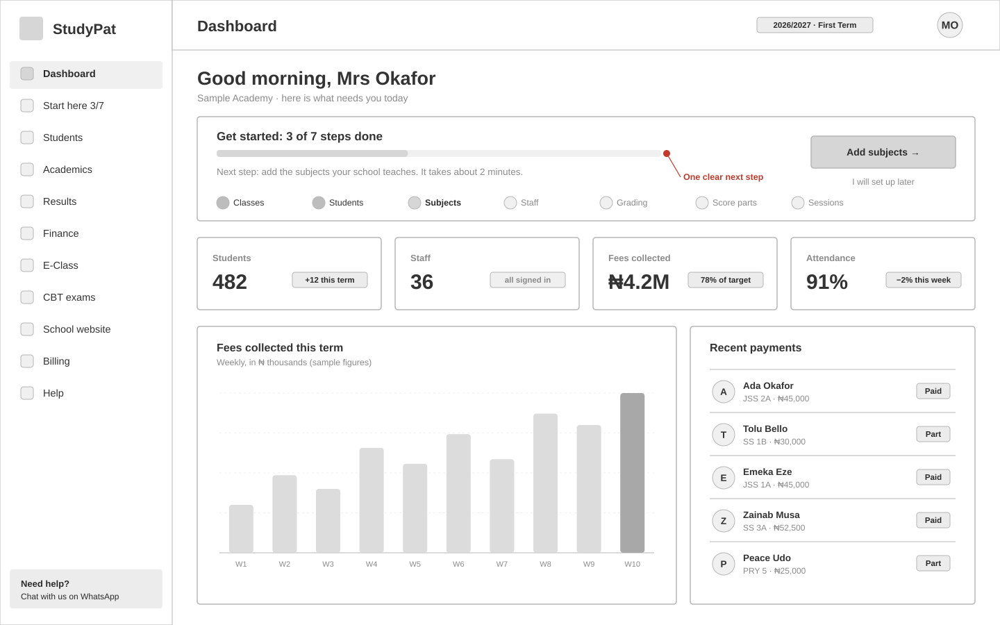

StudyPat live
A school management platform: results, fees, parents, teachers, e-learning, exams and a website for every school. Each school gets its own address, colours and installable app.
- Easy first run. Schools said “after registering I don’t know what to do next”. I replaced a 7-step wizard with a Get Started card that always shows the one next step.
- Parents first. The result page opens on average and position, with subject detail below, and prints cleanly from the browser (print stylesheets on 12 pages).
- Installable and branded. A service worker and a manifest per school; page HTML is never cached, so personal data and form tokens are never stale.
- A reusable UI kit. Help, step, tip, next-step and empty-state components used across dozens of screens.